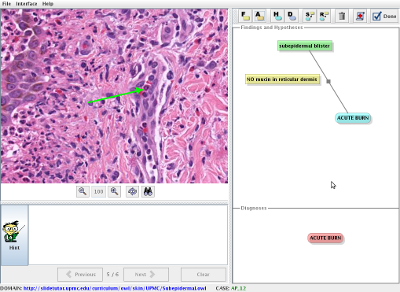

|
SlideTutor is a new kind of medical educational system that provides a virtual appreticeship
- simulated environment for learning accurate pathologic diagnosis and reporting
- can be used by pathology residents, fellows, and practicing pathologists
- uses “virtual slides” that you can examine just as you
would look at cases under your microscope
- provides space for you to describe what you are seeing and
deciding, as well as space to type your report
- monitors your work, and steps in with helpful explanations
if you make a mistake
- gives advice when you need help
- keeps track of how you are learning, and adapts its'
interaction to fit your specific educational needs
requires Java 1.5 or higher to run
|

|